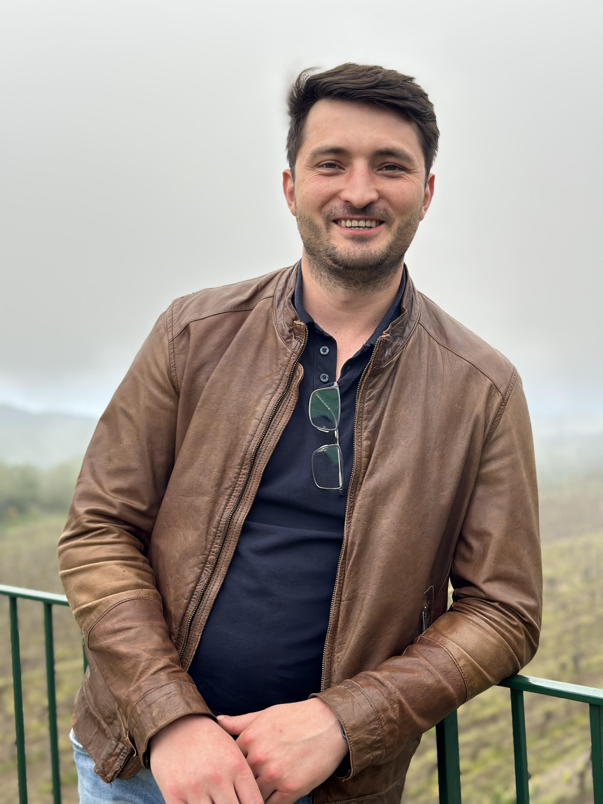
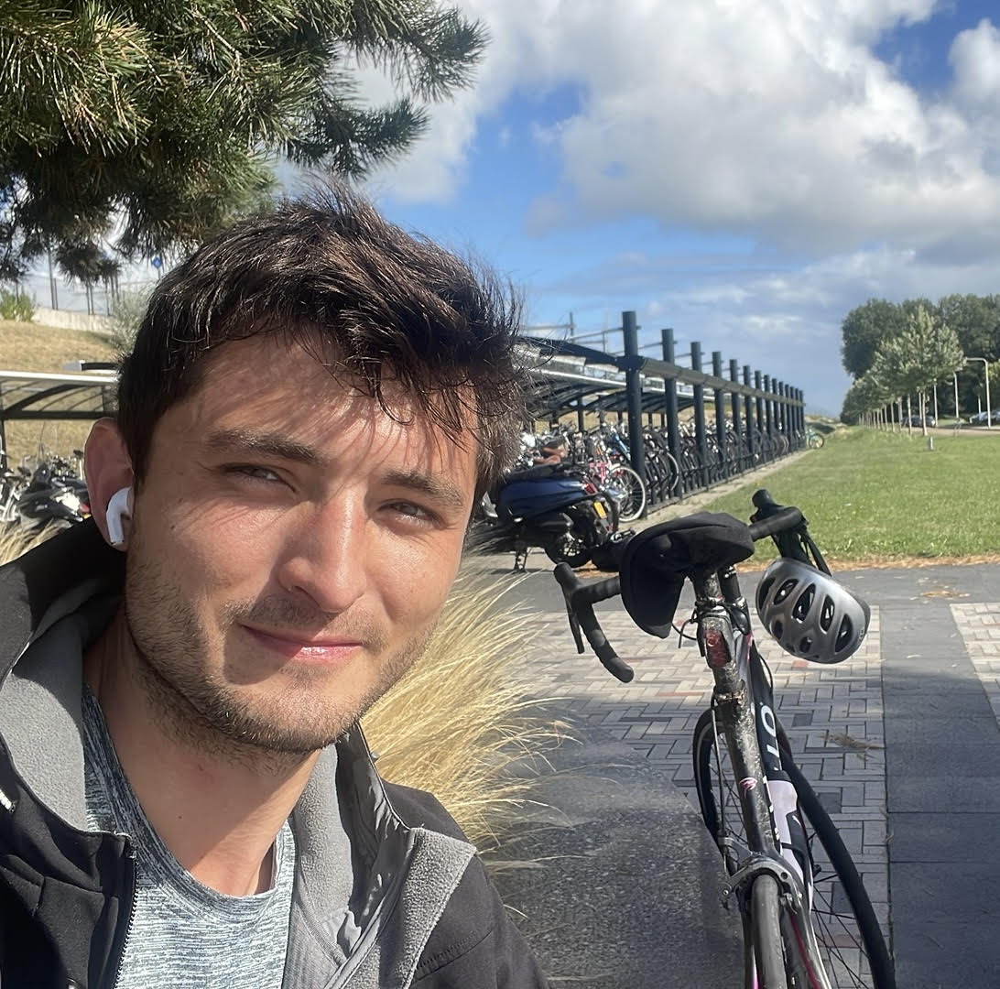
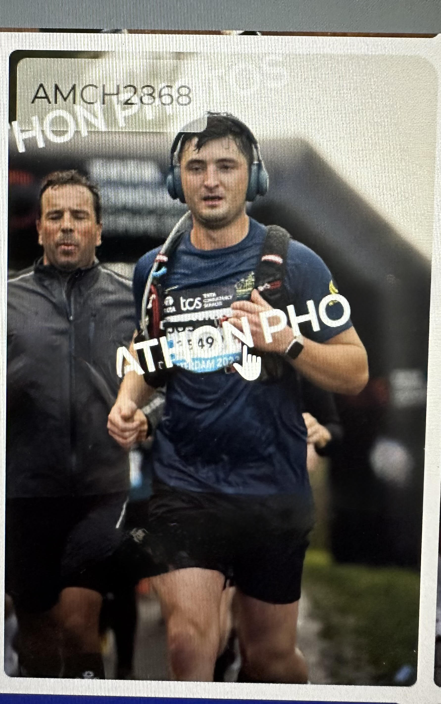

Where Business Expertise Meets Technical Knowledge
  Hello! I'm Joshua Boermans, a 29-year-old business professional from Hoofddorp with a unique combination of 6+ years of commercial B2B experience and hands-on technical expertise.
After years of working in the IT sector—from cloud-native startups to enterprise cybersecurity— I realized that my strength lies in bridging business and technology. Where others are exclusively commercial or technical, I thoroughly understand both worlds. In October 2025, I completed my IT Bootcamp to deepen this insight and position myself as a professional who can not only sell technical solutions, but also understand, implement, and optimize them.
What sets me apart is that I can translate business impact into technical requirements and vice versa. I speak the language of both the boardroom and the development room:
I'm seeking a new challenge where I can leverage my commercial experience and technical knowledge in roles such as Technical Account Manager, Solutions Engineer, Implementation Consultant, or Pre-Sales Engineer. An organization that values collaboration, growth, open communication, and innovation—where my hybrid profile is not just appreciated, but seen as a strategic advantage.
💬 Curious about my projects and experiences? I'm happy to share more details about my technical work, business cases, and learnings in a personal conversation. Feel free to contact me!
6+ years within the IT sector, from startups to enterprise. Started at XcellerateLabs (cloud-native consultancy), followed by Trusted Shops (e-commerce SaaS) and NCC Group (cybersecurity & software escrow). Proven results: €180K revenue, 30+ clients acquired, strategic partnerships with IT lawyers and C-level executives.
As co-founder and Head of Growth, I experienced the complete business-technical cycle: from client acquisition to hands-on development. Here I built low-code applications with Flutter/FlutterFlow, implemented AI-driven automations, and translated client needs into working software.
Important learning experience: By working closely with my business partner (who is now becoming CTO at another organization), I experienced how powerful it is when commerce and technology work hand-in-hand. This growth has fundamentally changed my career vision—I don't want to choose between business or tech, but unite both.
To take my technical insight to the next level, I completed an intensive IT bootcamp. Focus on full-stack development, database management, virtual machines, and network administration. This wasn't a career switch, but a strategic investment to deliver more value in business-technical roles.
Discipline, perseverance, and setting long-term goals—skills I apply both on the bike and in my career.
Active with stocks and crypto. It sharpens my analytical thinking, risk management, and strategic decision-making—skills that directly translate to business and IT.
Music brings creativity and discipline together. It helps me stay balanced and provides an outlet for analytical thinking.
Practical problem-solving—from furniture design to electrical projects. It strengthens my hands-on mentality and troubleshooting skills.
Discovering new cultures and places has taught me to be adaptive and open-minded—essential in the rapidly changing IT world.
As a side hobby, I experiment with new frameworks, tools, and automation scripts. This personal website is a great example!
I'm seeking an organization that sees the value in professionals who unite business and technology. A role where I help clients succeed by translating technical solutions into business impact, and converting business requirements into workable implementations. Think of:
Strategic partnerships with technical stakeholders
Design AND implement custom solutions
End-to-end project leadership from sales to deployment
Technical demos, POCs, and architecture advice
The link between sales, product, and engineering
From client conversation to go-live and beyond
Keep growing in both business and tech
Developed by Joshua Boermans